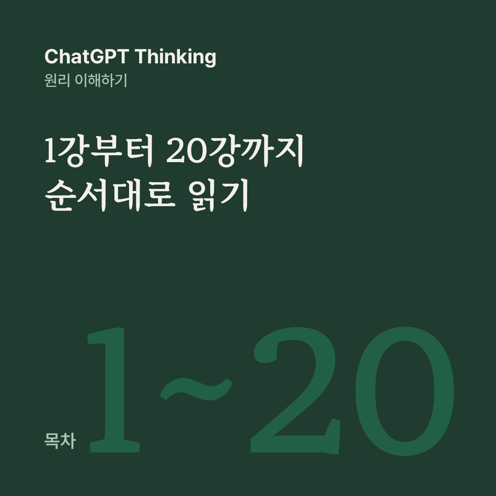

AI 원리 노트 · ChatGPT Thinking 목차
인공지능이나 컴퓨터를 전공하지 않았더라도, ChatGPT가 어떻게 답을 만들고, Thinking이 무엇을 다르게 하며, 왜 가끔 틀리는지 자기 말로 설명할 수 있게 되는 것입니다.
1강부터 순서대로 읽을 수 있도록 20편을 강의 순서대로 모았습니다. 글마다 끝에 있는 ‘다음 글’ 링크로도 이어서 읽을 수 있습니다.
1강 · ChatGPT는 다음 단어만 맞히는데, 어떻게 추론까지 할까?
2강 · ChatGPT는 어떻게 숫자로 의미를 표현할까?
3강 · ChatGPT는 정말 이해하고 생각하는 걸까?
4강 · ChatGPT는 왜 자신 있게 틀린 답을 할까?
6강 · ChatGPT로 원하는 답을 얻는 프롬프트 설계법
7강 · ChatGPT 같은 AI에게 일을 잘 위임하는 방법
8강 · ChatGPT 같은 AI 에이전트는 어떻게 스스로 일을 수행할까?
9강 · ChatGPT 같은 AI 여러 명이 팀을 이루면 무슨 일이 일어날까?
10강 · ChatGPT 같은 AI로 나만의 업무 시스템을 어떻게 설계할까?
11강 · ChatGPT 같은 AI 업무 시스템의 성과·비용·오류 관리
12강 · ChatGPT 같은 AI 업무 시스템을 안전하고 안정적으로 운영하는 방법
13강 · ChatGPT 시대, 사람의 역할은 어떻게 달라질까?
14강 · ChatGPT를 활용하면서도 내 사고력을 키우는 방법
15강 · ChatGPT 시대의 증거 기반 판단과 불확실성 다루기
16강 · ChatGPT 같은 AI의 확신은 얼마나 믿을 수 있을까?
17강 · ChatGPT 같은 AI 시스템의 실패를 미리 찾아내는 프리모텀과 레드팀
18강 · ChatGPT 시대, 예측할 수 없는 위험과 회복탄력성
19강 · ChatGPT 시대, 불확실할수록 작게 결정하고 빠르게 배우는 방법
20강 · ChatGPT와 함께 만드는 나만의 AI 의사결정 운영체계
